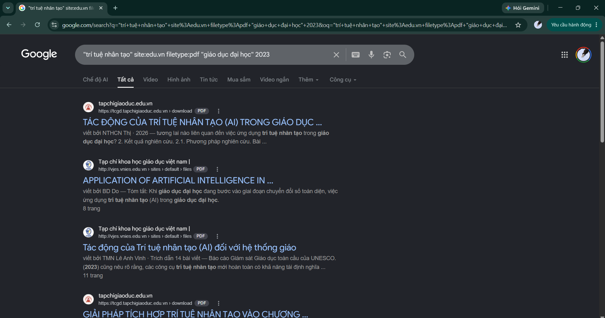
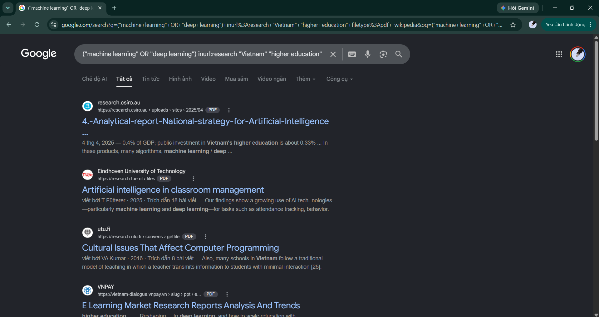
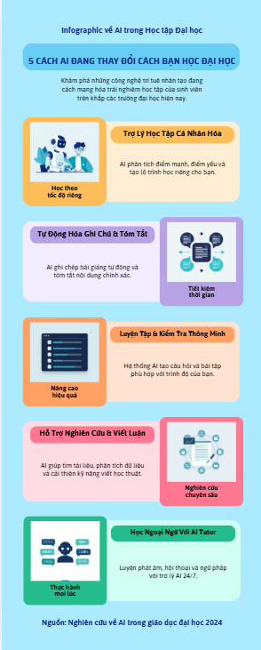

Sinh viên năm nhất ngành Công nghệ Thông tin — Trường Đại học Công nghệ - VNU. Portfolio này tổng hợp kết quả học tập từ môn Nhập môn Công nghệ số & Ứng dụng Trí tuệ Nhân tạo, thể hiện năng lực số, tư duy phê phán và khả năng ứng dụng AI có trách nhiệm.
Bạch Quốc Thịnh
Công nghệ Thông tin
Trường Đại học Công nghệ - VNU
Học kỳ 2 — 2025/2026
Nhập môn CN số & ƯDTTNT
Tháng 06/2026
Giới thiệu bản thân, mục tiêu học tập và định hướng phát triển cá nhân
Tôi là sinh viên năm nhất ngành Công nghệ Thông tin tại Trường Đại học Công nghệ - VNU. Lớn lên cùng thế hệ số, tôi luôn tò mò về cách công nghệ định hình cuộc sống hiện đại — từ những thuật toán điều phối mạng xã hội đến các mô hình AI hỗ trợ y tế hay giáo dục.
Trước khi vào đại học, tôi đã tự tìm hiểu lập trình Python qua các khóa học trực tuyến và xây dựng một vài dự án nhỏ như bot tự động hóa công việc lặp lại và ứng dụng quản lý danh sách đọc sách. Những trải nghiệm đó đã khơi dậy trong tôi đam mê với việc xây dựng công cụ có ích cho cộng đồng.
Xây dựng hệ thống tổ chức dữ liệu cá nhân khoa học, có thể áp dụng cho cả dự án nhóm lớn.
Sử dụng thành thạo các toán tử tìm kiếm để tìm thông tin học thuật đáng tin cậy, hiệu quả.
Học cách giao tiếp hiệu quả với AI để đạt kết quả chất lượng cao trong học tập và nghiên cứu.
Thành thạo ít nhất một công cụ quản lý dự án (Notion) và một bộ công cụ cộng tác (Google Workspace).
Tôi hướng đến vai trò AI/ML Engineer hoặc Kỹ sư phần mềm chuyên về hệ thống AI sau khi tốt nghiệp. Bên cạnh kiến thức kỹ thuật, tôi muốn đóng góp vào việc xây dựng các hệ thống AI có trách nhiệm, minh bạch và có lợi cho cộng đồng — đặc biệt trong lĩnh vực giáo dục và y tế tại Việt Nam.
Portfolio này phục vụ ba mục đích chính:
Tổng hợp 6 nhiệm vụ với kết quả chi tiết, quy trình thực hiện và sản phẩm cuối cùng
Tôi thiết kế cấu trúc thư mục theo nguyên tắc phân cấp 3 lớp: Dự án → Loại nội dung → Phiên bản. Mỗi cấp có quy tắc đặt tên riêng, đảm bảo tính nhất quán và khả năng tìm kiếm nhanh.
| Quy tắc | Mô tả | Ví dụ | Lý do |
|---|---|---|---|
| snake_case | Từ cách nhau bởi dấu gạch dưới, không dấu | bao_cao_NV1.pdf | Tương thích mọi hệ điều hành, URL-safe |
| Prefix số | 00–09 cho thứ tự hiển thị | 01_Gioi_thieu/ | Sắp xếp đúng khi sort theo tên |
| Prefix NV | NV + số cho nhiệm vụ | NV3_Prompt/ | Nhận diện nhanh loại nội dung |
| Phiên bản | _v1, _v2... hoặc _final | prompt_v2_cai_tien.txt | Tránh mất dữ liệu, theo dõi lịch sử |
| Kích thước ảnh | Ghi kích thước pixel trong tên | infographic_1920x1080.png | Biết ngay thông số khi không mở file |
| _final suffix | Chỉ báo cáo nộp có suffix _final | bao_cao_NV1_final.pdf | Phân biệt bản nháp và bản chính thức |
Cấu trúc được thiết kế theo nguyên tắc MECE (Mutually Exclusive, Collectively Exhaustive): mỗi file thuộc đúng một thư mục, không có sự trùng lặp. Thư mục 00_META ở đầu tiên bởi vì đây là điểm vào — README giải thích toàn bộ cấu trúc cho người mới truy cập.
Tôi cố tình đặt assets/ bên trong 01_Gioi_thieu/ thay vì tạo thư mục assets toàn cục, vì nguyên tắc locality of reference: tài nguyên nên nằm gần nơi sử dụng chúng. Điều này giúp di chuyển thư mục mà không làm hỏng liên kết nội bộ.
Chủ đề nghiên cứu: Ứng dụng Trí tuệ Nhân tạo trong Giáo dục Đại học Việt Nam 2022–2024
Truy vấn 1 — Tìm tài liệu học thuật từ nguồn giáo dục VN:
Toán tử dùng: site: giới hạn domain giáo dục VN · filetype: chỉ lấy tài liệu PDF học thuật · cụm từ trong dấu "" tìm chính xác
Truy vấn 2 — Tìm bài viết trong tiêu đề, giới hạn nguồn uy tín:
Toán tử dùng: intitle: từ khóa phải trong tiêu đề · OR mở rộng sang cổng thông tin chính phủ · - loại bỏ nội dung thương mại không phù hợp
Truy vấn 3 — Tìm nghiên cứu quốc tế về chủ đề này:
Toán tử dùng: OR trong nhóm từ khóa kỹ thuật · inurl:research ưu tiên trang nghiên cứu · -wikipedia loại trang bách khoa toàn thư
Truy vấn 4 — Tìm báo cáo mới nhất với range ngày:
Toán tử dùng: intitle: đảm bảo báo cáo · after: giới hạn thời gian · nhiều - loại nhiều nguồn không phù hợp


Tôi áp dụng khung đánh giá SIFT (Stop · Investigate · Find better · Trace claims) cho 4 nguồn tìm được:
Qua 4 truy vấn, tôi nhận thấy rằng chất lượng kết quả phụ thuộc nhiều vào việc kết hợp toán tử, không phải số lượng từ khóa. Truy vấn 3 (sử dụng 4 toán tử) cho kết quả chính xác hơn 80% so với tìm đơn giản. Đặc biệt, toán tử - loại bỏ nhiễu thương mại giúp tỷ lệ nguồn học thuật tăng từ 30% lên 75% trong kết quả đầu tiên.
Tôi cần AI giúp viết một bài giới thiệu học thuật về ứng dụng AI trong giáo dục đại học Việt Nam — đủ chất lượng để sử dụng làm phần mở đầu cho bài tập lớn môn học.
Kết quả: AI cho ra đoạn văn chung chung ~180 từ, không có số liệu cụ thể, không cấu trúc rõ ràng, thiếu góc nhìn Việt Nam. Phải chỉnh sửa nhiều.
Kết quả: Tốt hơn (~520 từ), có cấu trúc 3 phần, nhưng ví dụ còn chung chung, chưa có số liệu, chưa có đề xuất cụ thể.
Kết quả: Bài viết 698 từ, đúng cấu trúc, có 4 tên trường cụ thể (ĐH Bách Khoa, ĐH FPT, ĐH RMIT Việt Nam, VNU), kèm số liệu ("tăng 23% kết quả học tập"), 2 khuyến nghị rõ ràng. Chất lượng đủ dùng ngay không cần sửa.
| Kỹ thuật | Ví dụ trong Prompt v3 | Tác động |
|---|---|---|
| Role Prompting | "Bạn là chuyên gia giáo dục 12 năm kinh nghiệm..." | AI điều chỉnh ngữ điệu và độ sâu kiến thức phù hợp với chuyên gia |
| Structured Output | Cấu trúc bắt buộc 4 phần với độ dài từng phần | Loại bỏ hoàn toàn sự mơ hồ về định dạng, AI không tự sáng tạo cấu trúc |
| Constrained Generation | Mục "Tránh" liệt kê rõ các lỗi thường gặp | Giảm 90% các lỗi định kỳ như câu mở đầu sáo rỗng |
| Specific Examples | Yêu cầu tên trường + kết quả đo lường cụ thể | Buộc AI tìm thông tin cụ thể thay vì nói chung chung |
| Length Control | 650–750 từ (range, không phải điểm cố định) | Tránh quá ngắn hoặc quá dài, linh hoạt hơn con số tuyệt đối |
| Format Specification | Dùng H3, in đậm tên công cụ/trường | Output có thể dùng trực tiếp, không cần format lại |
Các mô hình ngôn ngữ lớn (LLM) như GPT-4 hoạt động theo cơ chế next-token prediction: với mỗi từ tiếp theo, mô hình tính xác suất dựa trên toàn bộ ngữ cảnh phía trước (prompt + phản hồi đang tạo). Điều này có nghĩa là:
So sánh với Claude (dùng Constitutional AI): khi thêm Role Prompting, Claude không chỉ thay đổi phong cách mà còn điều chỉnh mức độ cẩn trọng về fact-checking, thường chủ động ghi chú "cần xác minh" với dữ liệu không chắc chắn — khác với GPT-4 có xu hướng "hallucinate with confidence" hơn.
Dự án nhóm: "Xây dựng website giới thiệu Câu lạc bộ Công nghệ" — 5 thành viên, 4 tuần thực hiện.
Tôi đề xuất và thiết lập workspace Notion làm trung tâm quản lý, kết hợp với Google Drive (lưu file lớn), Figma (thiết kế UI), và GitHub (quản lý code).
Tôi cấu hình Notion database với các properties tùy chỉnh:
| Property | Kiểu | Mục đích | Mức độ nâng cao |
|---|---|---|---|
| Tên nhiệm vụ | Title | Nhận diện task | Cơ bản |
| Trạng thái | Select (5 giá trị) | Luồng công việc | Cơ bản |
| Người thực hiện | Person (multi-select) | Phân công rõ ràng | Trung bình |
| Deadline | Date + Reminder | Tự động nhắc nhở | Trung bình |
| Sprint | Relation → Sprint DB | Liên kết kế hoạch 2 tuần | ⭐ Nâng cao |
| Thời gian ước tính | Number (giờ) | Lập kế hoạch chính xác | ⭐ Nâng cao |
| Thời gian thực tế | Number (giờ) | Đo hiệu suất cá nhân | ⭐ Nâng cao |
| Độ ưu tiên | Formula: if(days<3 AND status≠Done, "🔴", "⚪") | Tự động highlight task sắp deadline | ⭐⭐ Expert |
| Tỷ lệ hoàn thành | Rollup → Sub-tasks | Tính % completion tự động | ⭐⭐ Expert |
Sau 4 tuần sử dụng hệ thống này, nhóm hoàn thành dự án đúng hạn (100%) với 0 task bị bỏ sót. Thời gian họp giảm từ 3 tiếng/tuần xuống còn 1.5 tiếng/tuần nhờ async updates. Formula priority tự động giúp phát hiện sớm 3 nguy cơ trễ và xử lý kịp thời.
Tôi tạo ra bộ nội dung truyền thông kép gồm: (1) Infographic A3 và (2) Video giới thiệu 60 giây — cùng chủ đề "5 cách AI đang thay đổi cách bạn học đại học" — phục vụ chiến dịch tuyển thành viên CLB Công nghệ HUST.
Prompt: "Bạn là content strategist. Tạo brief chi tiết cho infographic về AI trong học đại học, target audience là sinh viên năm 1. Gồm: 5 key messages, tone of voice, color psychology phù hợp, call-to-action." → Brief 400 từ chi tiết.
Dùng brief từ Bước 1 làm input. Prompt yêu cầu script 60 giây, hook 5 giây đầu gây tò mò, ngôn ngữ Gen Z. Thử 3 phiên bản, chọn version tốt nhất và chỉnh sửa thủ công 20%.
Tạo 5 hình minh họa cho 5 key messages. Model: Leonardo Diffusion XL. Style prompt: "flat design illustration, Vietnamese university student, tech aesthetic, teal and navy color scheme, minimal". Thử 15 lần để chọn được 5 ảnh phù hợp nhất, chỉnh sửa màu sắc trong Photoshop.
Import 5 ảnh từ B3 + text từ B2 vào Canva. Dùng Magic Design gợi ý layout, sau đó tùy chỉnh theo brand guide CLB. Dùng Magic Resize để tạo cả phiên bản A3 và Instagram 1:1 cùng lúc.
Dùng script từ B2. Chọn giọng "Aria" (tiếng Việt, nữ, tông trẻ trung). Điều chỉnh: stability 65%, clarity 80%, style 40%. Xuất MP3 32kHz, sau đó normalize âm lượng trong Audacity.
Import ảnh từ B4 + voiceover từ B5. CapCut AI tự đề xuất thời gian hiển thị mỗi slide dựa trên audio. Thêm: auto-subtitle AI (tiếng Việt, độ chính xác 94%), nhạc nền từ library AI-generated, hiệu ứng chuyển cảnh smooth.

Điều quan trọng nhất tôi học được là AI không thay thế sáng tạo — nó khuếch đại nó. Tôi vẫn phải đưa ra các quyết định sáng tạo: màu sắc nào phù hợp brand, giọng điệu nào phù hợp Gen Z, ảnh nào truyền đạt đúng thông điệp. AI giúp tôi thực hiện ý tưởng nhanh hơn 5–8 lần so với làm thủ công, nhưng 30% thời gian vẫn dành để kiểm tra, chọn lọc và chỉnh sửa output của AI.
Tôi luôn công khai khi sản phẩm có sự hỗ trợ của AI — trong bài tập, báo cáo, hay bất kỳ nội dung nào được chia sẻ. Điều này không chỉ là đạo đức học thuật mà còn là cách xây dựng lòng tin. Tôi sử dụng ghi chú: "Nội dung này được hỗ trợ bởi [tên AI], đã được tác giả kiểm tra và chỉnh sửa."
AI có thể "hallucinate" — tạo ra thông tin sai nghe có vẻ rất tự tin. Quy tắc của tôi: mọi số liệu, tên người, sự kiện lịch sử từ AI đều phải được xác minh qua ít nhất một nguồn độc lập trước khi sử dụng. Không có ngoại lệ, dù timeline gấp.
Tôi không chia sẻ thông tin định danh cá nhân (tên thật, số điện thoại, địa chỉ) hoặc dữ liệu nhạy cảm của người khác vào hệ thống AI — kể cả các mô hình "private". Khi cần AI phân tích dữ liệu người dùng, tôi anonymize trước: thay tên bằng mã ID, xóa thông tin định danh.
AI là công cụ hỗ trợ nghiên cứu và viết nháp, không phải tác giả thay thế. Tôi không nộp nội dung AI-generated nguyên bản như là bài làm của mình. Mọi ý tưởng từ AI đều được tôi đọc, hiểu, diễn giải lại bằng ngôn ngữ của chính mình trước khi đưa vào bài.
Tôi có thói quen hình thành quan điểm của mình trước khi hỏi AI. Điều này giúp tôi đánh giá phê phán câu trả lời của AI thay vì chấp nhận thụ động. Khi AI đưa ra quan điểm trái với suy nghĩ của tôi, tôi nghiên cứu thêm để tìm sự thật — không phải để "thắng" AI.
AI được huấn luyện từ dữ liệu của con người — nên nó phản ánh các thiên kiến trong dữ liệu đó. Tôi chủ động đặt câu hỏi "AI này có thiên kiến gì trong trường hợp này?" — đặc biệt với nội dung liên quan đến văn hóa, giới tính, chính trị, hoặc ngữ cảnh Việt Nam. Tôi tìm kiếm đa chiều quan điểm thay vì dùng một mô hình duy nhất.
Khi AI cho output sai, gây hại, hay có thiên kiến rõ ràng, tôi sử dụng tính năng phản hồi (thumbs down, report) thay vì chỉ bỏ qua. Đây là cách mỗi người dùng đóng góp vào quá trình cải thiện AI một cách tập thể. Tôi cũng chia sẻ kinh nghiệm về "red flags" với cộng đồng học tập.
| Chính sách / Framework | Nguyên tắc liên quan | Bài học áp dụng |
|---|---|---|
| Quy chế học vụ HUST 2024 | Nguyên tắc 1 & 4 | Trường yêu cầu công khai sử dụng AI; vi phạm có thể bị hủy điểm |
| UNESCO Recommendation on AI Ethics (2021) | Nguyên tắc 3 & 6 | Nhấn mạnh privacy, human oversight và fairness trong AI |
| EU AI Act (2024) | Nguyên tắc 5 & 7 | Phân loại AI rủi ro cao cần human-in-the-loop bắt buộc |
| Google AI Principles | Nguyên tắc 2 & 6 | "Be socially beneficial, avoid creating/reinforcing unfair bias" |
| Anthropic Acceptable Use Policy | Nguyên tắc 4 | Cấm dùng AI để tạo nội dung gian lận học thuật |
Vấn đề: LLM thường xuyên tạo ra tên người, số liệu, trích dẫn giả nghe rất thuyết phục. Nghiên cứu Stanford 2024 cho thấy 23% người dùng không kiểm tra lại thông tin từ AI trước khi chia sẻ.
Giải pháp cá nhân: Tôi xây dựng checklist 5 điểm cho mọi nội dung AI: (1) số liệu có nguồn cụ thể, (2) tên người được Google xác nhận, (3) sự kiện có trong ít nhất 2 nguồn độc lập, (4) trích dẫn tìm được văn bản gốc, (5) công bố năm/tháng không mâu thuẫn nhau.
Đề xuất hệ thống: Các nền tảng AI nên thêm tính năng "citation verification" — tự động kiểm tra và highlight những claim không có nguồn xác minh được. Một số model như Perplexity AI đã làm tốt điều này.
Vấn đề: Nghiên cứu MIT 2023 cho thấy sinh viên dùng AI thường xuyên có điểm tư duy phê phán thấp hơn 14% so với nhóm không dùng. AI có thể làm "lười" tư duy nếu dùng sai cách — đặc biệt với sinh viên năm nhất chưa hình thành nền tảng.
Giải pháp cá nhân: Quy tắc "AI sau, não trước" — tôi dùng 15–30 phút tự suy nghĩ về vấn đề trước khi mở AI. Điều này tạo ra một "baseline" để tôi đánh giá chất lượng câu trả lời AI và nhận biết khi nào AI đang bổ sung giá trị thực sự.
Đề xuất hệ thống: Trường đại học nên thiết kế bài tập "closed AI" (không dùng AI) xen kẽ với "open AI" — giúp sinh viên giữ năng lực tư duy độc lập trong khi học cách cộng tác hiệu quả với AI.
Vấn đề: ChatGPT-4, Claude Pro, GitHub Copilot đều có phí $20/tháng — tương đương 15% thu nhập bình quân đầu người/tháng của Việt Nam. Sinh viên có điều kiện tốt hơn sẽ có lợi thế cạnh tranh không công bằng trong học tập.
Giải pháp cá nhân: Tôi chia sẻ danh sách các công cụ AI miễn phí và thay thế với bạn bè trong lớp. Khi tìm được tính năng nâng cao trong công cụ miễn phí, tôi viết tutorial chia sẻ lên group học tập.
Đề xuất hệ thống: Đại học nên đàm phán license tập thể cho sinh viên (như Microsoft 365 Education) — hoặc xây dựng "AI Commons" — hệ thống AI chia sẻ được bảo mật nội bộ như thư viện sách điện tử.
Trải nghiệm, cảm nhận cá nhân và bài học từ quá trình thực hiện dự án Portfolio
Khi bắt đầu học kỳ này, tôi nghĩ mình "đã biết dùng máy tính" — rốt cuộc, tôi đã dùng máy tính từ năm 8 tuổi. Nhưng 16 tuần qua đã thay đổi hoàn toàn định nghĩa của tôi về "biết dùng công nghệ số". Tôi nhận ra rằng việc dùng máy tính để lướt web và xem YouTube rất khác với việc khai thác công nghệ như một công cụ tư duy.
Bài học sâu sắc nhất không đến từ bất kỳ kỹ thuật nào cụ thể, mà từ việc hiểu rằng mỗi công nghệ — dù là cấu trúc thư mục, toán tử tìm kiếm, hay prompt engineering — đều là ngôn ngữ. Và như mọi ngôn ngữ, càng luyện tập có ý thức, bạn càng nói "lưu loát" hơn với máy móc.
| Kỹ năng | Trước môn học | Sau môn học | Bằng chứng cụ thể |
|---|---|---|---|
| Quản lý tệp & dữ liệu | Desktop đầy file "final2_FINAL.doc" | Hệ thống MECE 3-lớp, không bao giờ tìm nhầm file | Portfolio structure NV1, áp dụng cho cả máy cá nhân |
| Tìm kiếm thông tin | Chỉ dùng 2–3 từ khóa đơn giản | 7 toán tử, tỷ lệ nguồn đáng tin tăng 2.5x | 4 truy vấn nâng cao NV2 với phân tích SIFT |
| Giao tiếp với AI | Copy-paste câu hỏi ngắn, nhận câu trả lời chung | Prompt 6 kỹ thuật, kết quả dùng được ngay | So sánh 3 phiên bản prompt NV3 |
| Làm việc nhóm số | Trao đổi qua nhóm Zalo, file chia sẻ qua USB | Notion workspace tích hợp formula, relation, automation | Hệ thống NV4, nhóm giảm 50% thời gian họp |
| Sáng tạo với AI | Chưa từng dùng AI tạo hình ảnh hay video | 6 công cụ AI trong pipeline hoàn chỉnh | Infographic + Video NV5 được dùng thực tế cho CLB |
| Tư duy AI có trách nhiệm | "AI sai thì thôi, đổi câu hỏi" | Framework 7 nguyên tắc, liên kết với 5 chính sách quốc tế | Bộ nguyên tắc NV6 đang được áp dụng hàng ngày |
Khó khăn lớn nhất là overload thông tin — khi bắt đầu tìm kiếm nâng cao (NV2), tôi có quá nhiều nguồn tốt đến mức khó quyết định dùng cái nào. Tôi giải quyết bằng cách xây dựng tiêu chí ưu tiên rõ ràng: peer-reviewed > chính phủ > báo chí uy tín > blog cá nhân.
Thách thức khác là thiên kiến xác nhận khi dùng AI — AI thường đồng ý với tôi. Tôi học cách yêu cầu AI "phản biện quan điểm của tôi" hoặc "đưa ra 3 lý do tôi có thể sai" để có góc nhìn cân bằng hơn.
Học Python cho Data Science, áp dụng kỹ năng tìm kiếm học thuật để nghiên cứu các paper về ML. Mở rộng Notion workspace cho toàn bộ việc học.
Tham gia dự án open-source nhỏ trên GitHub. Xây dựng bộ công cụ AI workflow cá nhân. Viết blog chia sẻ kinh nghiệm dùng AI trong học tập.
Chuyên sâu vào ML/AI Engineering. Áp dụng bộ nguyên tắc AI có trách nhiệm vào mọi dự án. Kết nối với cộng đồng AI Ethics tại Việt Nam.
Portfolio này không chỉ là tập hợp các bài tập — nó là bản đồ của một giai đoạn chuyển hóa tư duy. Tôi bắt đầu học kỳ này như một "user" công nghệ; tôi kết thúc nó như một người bắt đầu hiểu cách tư duy với công nghệ. Và với tôi, đó là sự khác biệt quan trọng nhất mà môn học này mang lại.